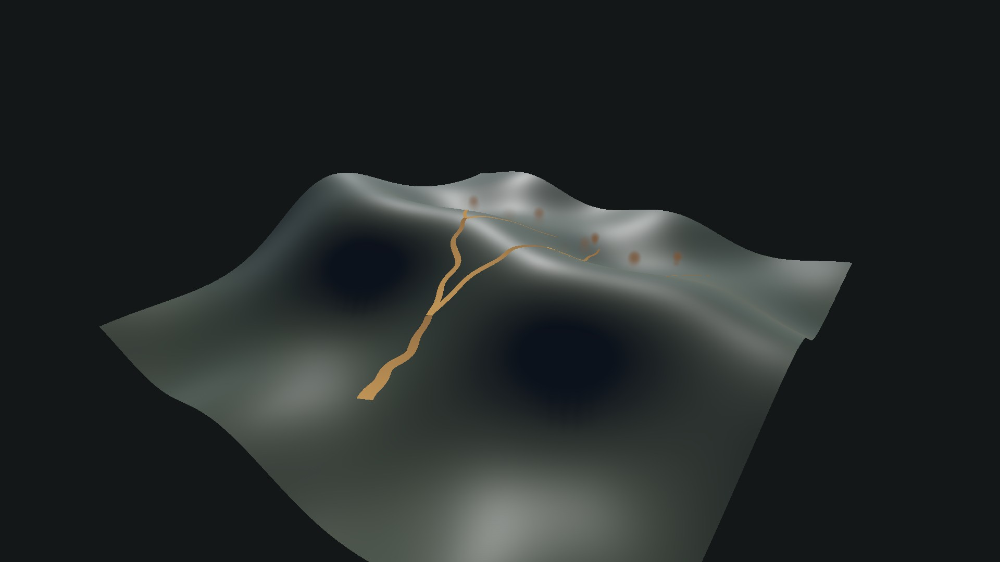
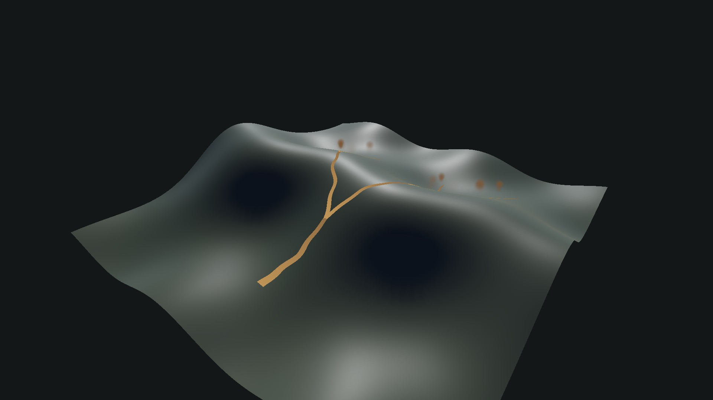
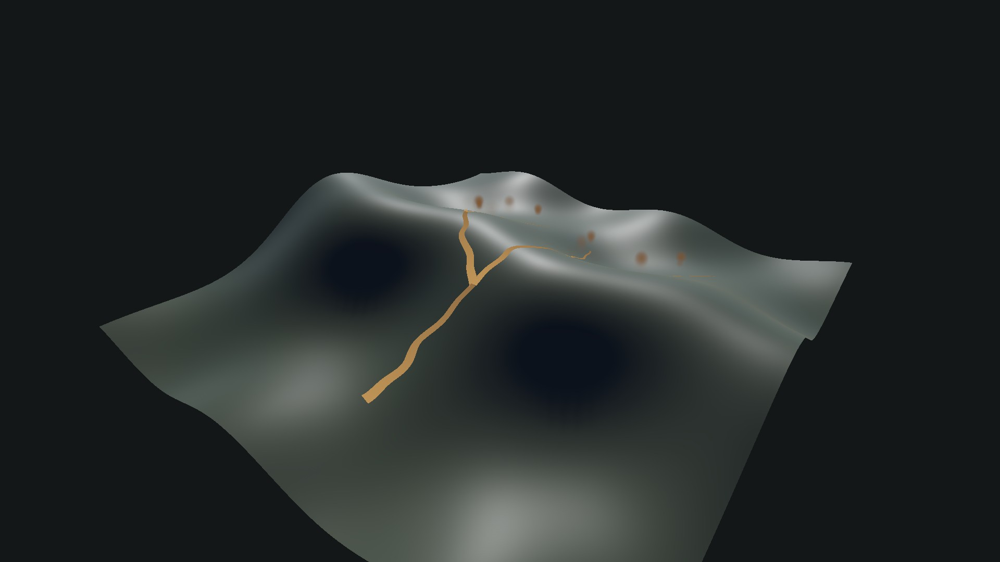

시전마다 갈림점·길이·굴곡·두께가 달라집니다. 하나의 큰 줄기에서 작은 줄기로 이어지며, 균열 양쪽 가장자리와 돌가루가 지면을 따릅니다. 최종 비주얼은 검토 대기입니다.
고정된 대칭 분기를 절차생성으로 변경했습니다. 첫 갈림점은 전체 거리24~34%, 양쪽 다음 갈림점은 각각50~65%·55~70%에 생깁니다. 끝 가지의 길이·좌우 위치·굴곡·두께도 다릅니다. 시전이 바뀌면 모양이 달라지고, 같은 시전의 재생·시점 변경에서는 같은 모양을 유지합니다.
언덕에서는 약10cm 간격으로 균열 중심과 양쪽 가장자리를 실제 지면에 맞춥니다. 지면이 없거나 높이가 급격하게 단절된 구간은 허공으로 이어 붙이지 않습니다. 돌가루도 같은 경로를 사용합니다. 피해 폭12m·위력5·속도7m/s는 유지했습니다.
1080p·24fps·각 6초. 동일한 C2에서 고정 카메라와 임시 표적을 사용하고, 실제 광역 Resolve·예약 피해·공통 접촉 경로를 호출했습니다. 현재 SpellBook의 범위·속도·지연을 사용합니다. 손글씨 입력이나 적 AI를 포함한 전투 영상은 아닙니다.
기존판은 직전 AreaBranch 설정, 수정판은 이번 설정입니다. SpellBook·피해·범위·속도는 이번에 변경하지 않았습니다. 좌우로 퍼진 표적9개와 범위 밖 표적1개를 같은 위치에 배치했습니다. 30·60·120fps 검사는 효과 경과 시간의 수치 샘플링이며 각 프레임레이트의 전체 게임 성능 측정은 아닙니다.
기존 기본 10종과 공급자 원본은 보존했습니다. 기술 보고서 · 광역 검사 · 이전 기본 10종 회귀 · 이전 광역 술식 검토
높이 약2.5m의 굴곡진 시험 지형입니다. 아래 세 결과는 서로 다른 시드입니다. 이미지는1080p이며 라벨은 이미지 밖에 표시했습니다. 이 시험은 지면 추종 확인용으로, C2 전투·전체 성능 검증을 대체하지 않습니다.


